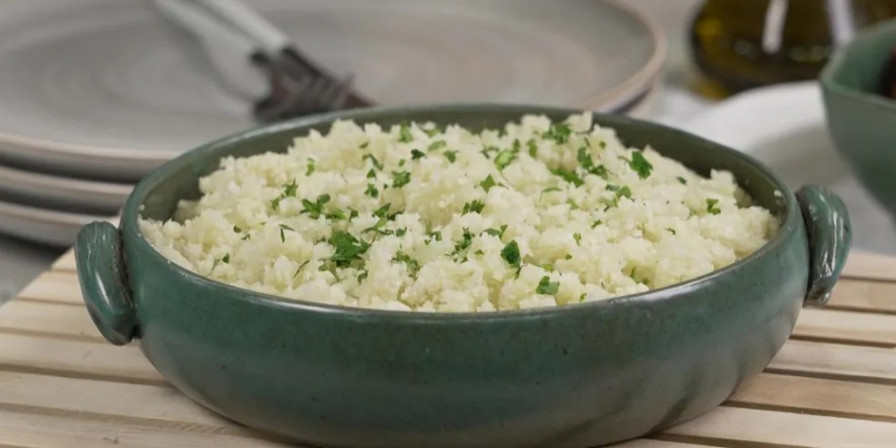
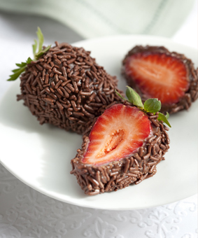

Home
Receitas
Cadastro

Arroz de couve-flor
Arroz
Couve-flor
Cebola média
Azeite
Deixe a couve-flor picada. Adicione os ingredientes e refogue bem. Adicione sal, tampe a panela e deixe cozinhar.
Bolo de café
Farinha de trigo
Açúcar
Café coado
Chocolate em pó
Ovos
Bata o acúcar, as gemas e o café. Adicione farinha e chocolate e mexa bem. Bata as claras e junte à mistura.

Coxinha de brigadeiro
Leite condensado
Chocolate em pó
Manteiga
Morango
Chocolate granulado
Junte o leite condensado, chocolate em pó e manteiga. Aqueça no fogo baixo. Envolva os morangos e passe no granulado.